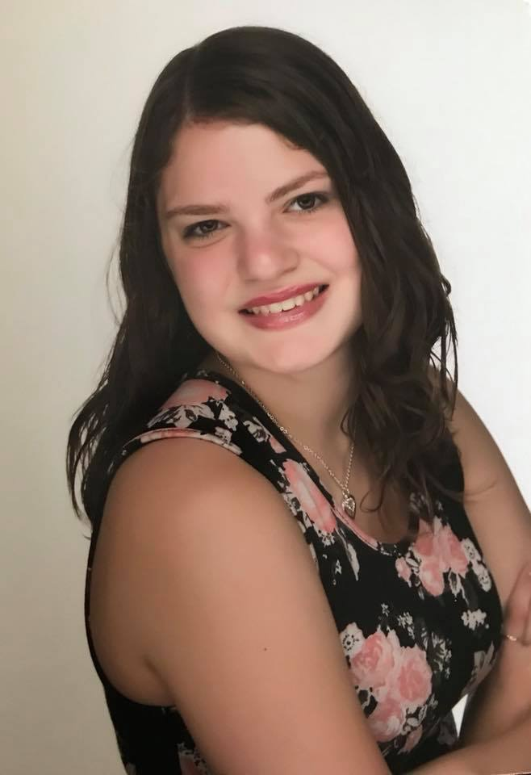
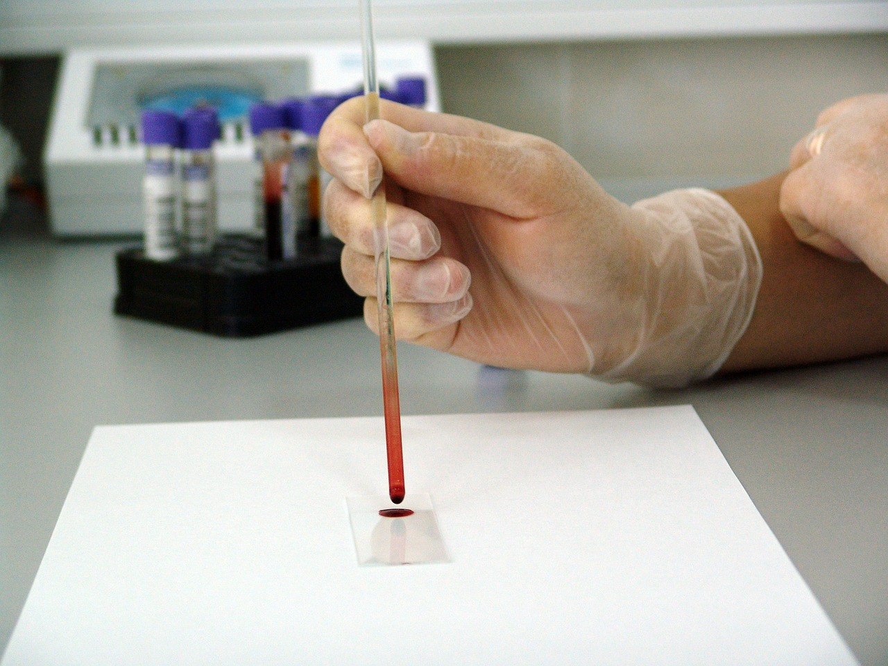

Alexa Wilson-Portfolio
About Me

Click play below to hear me introduce myself.
Hello, I'm Alexa – the person, not the virtual assistant. At the beginning of my first semester, I thought that I wanted to work in the field of computers, and I started on a path to a career in computer programming. But I recently found that my passion lies in biology. I took two biology courses, and I found myself excited about the material and wanting to talk about it all the time. When I was sitting at Friendly’s telling my dad about cellular respiration, I realized that I am genuinely interested in biology. I also really connected with one of my professors, who I found out is the head of the Biotechnology department, so I decided to switch to that field. Because I started out majoring in Computer Information Systems, I will have some knowledge about computers and coding as well as what I learn in biology.
Most people know that hard work is required for a good career and life in general, but I am hard-working because it’s built into my personality. This applies not only to educational and professional situations but also to my hobbies, including traditional Greek dancing and exercising. Other things that I enjoy are reading, animals, the beach, and spending time with my friends and family.
Relevant Courses
- Honors Biology 1
- Honors Biology 2
- Calculus 1
- Statistical Methods
- Introduction to Computer Science

Work Samples
Accomplishments
- High School Valedictorian
- Florida Gulf Coast University Honors College Student
- President's List (4.0 GPA)
- Bright Futures Scholarship Recipient
- President's Gold Scholarship Recipient
Related Links
Community Service
- Eagle Expo Volunteer - Assisted at two Eagle Expo events
- Gulf Coast Village - Interacted with seniors who need full time care
- Church Festival Volunteer - Performed in over 100 dance performances during St. Nicholas Greek Orthodox Church fundraisers
- Neighborhood Cleanup - Cleaned up litter on a sponsored street in Port Saint Lucie, Florida
- Airport Hangar Cleanup - Participated in the clean-up of an airport hangar used by Missionary Flights International
- Tutoring - Volunteered to tutor a student to help him acclimate to his new school environment
- Operation Christmas Child - Assembled and packed boxes of supplies for needy children
- Treasure Coast Food Bank - Sorted donated supplies to prepare for distribution
Here is a video slide show of some of my experiences.
This portfolio web page has been designed to maximize usability and accessibility. The ways this has been done are as follows:
- User friendly layout – There is a clear page heading and clear headings for each section with appropriate labels. There is space in between each section and a consistent layout to assist with readability.
- Simple and clean title – I used Arial, an easy-to-read font included with most browsers, for the title (h1). The title is centered with padding on the top and bottom, and the font is bold and large enough to make it stand out.
- Readability – The portfolio page has unity with a consistent font, color scheme, and design throughout. Each section has the same alignment with centered headings (h2) and a consistent format underneath it.
- Color Scheme and contrast – The background is light blue (#ACF9F9), and the text is black (#000000). These colors sufficiently contrast according to WebAIM and the WAVE Web Accessibility Tool.
- Style – The content was tested with the WAVE Web Accessibility Tool and received no errors.
- Web Content Accessibility – For the visually impaired, alt text has been included for each image, with the exception of decorative images. The text links are simple and clearly describe what they link to. There is a brief text introduction preceding the audio link so that the hard of hearing know what the audio file is. There is also a short text description about the video. The page down, tab, and enter keys can be used to navigate the website with only a keyboard. Because of the consistent format, the website is easy to navigate.